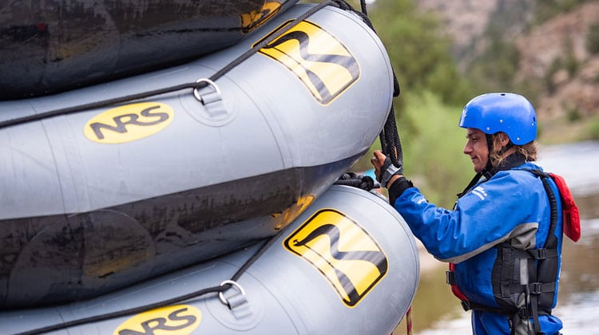
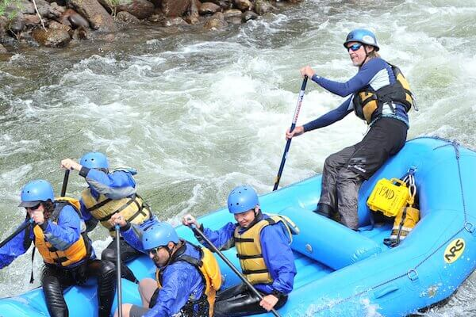

We Offer A Variety of Guided Rafting Expeditions!!
With 60 years guiding adventurous travelers through the most spectacular rivers and canyons in the West, Montana Raft Outlet has carefully crafted what we consider to be the best white water rafting vacations in the world. The setting and pace of an all-inclusive Western River rafting trip give you something you don't find in other vacations. On a Smith River rafting trip, Glacier rafting vacation, Montana whitewater rafting adventure, Blackfoot river rafting trip, white water river adventure in Missoula or anything else you can imagine, you'll find the perfect respite from the hectic world around us–completely free of distractions.
Join MT Raft outlet on an unparalleled whitewater rafting journey and discover the relaxation of drifting down river without a care in the world, the exhilaration of rafting America's most legendary whitewater, the exploration of seldom-seen natural wonders, and the peaceful reflection of gazing up at the star studded sky. On a Western River Expedition you will quickly discover why so many are calling this "the best vacation of their lives." Call (406) 231-4469 today and let us help you find the perfect adventure.

-One of our guides navigating the whitewaters of Montana
Discounted Rates
6 or more people – 10% OFF!AAA or Active Military – 10% OFF (must call for discount and present ID day of trip)If you have a large group, special event, birthday party, bachelor party, bachelorette party, convention, conference or business meeting, please call for special pricing, custom meet times and other options designed just for you.
Cancellation Policy
A 50% Deposit is REQUIRED to confirm your reservation.Your trip is 100% refundable 2 weeks before trip date – 50% deposit becomes non refundable within 2 weeks – 100% non refundable payment due day of trip WE RAFT RAIN OR SHINE Guests can NOT cancel due to weather. Pangaea reserves the right to cancel due to weather or high water. No charge if trip is cancelled by Pangaea.